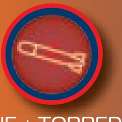
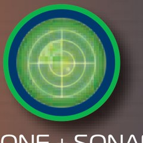
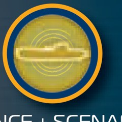
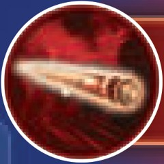
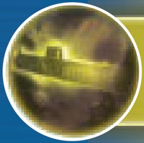

CAPTAIN SONAR
PLAYER AID · REAL TIME · 8 PLAYERS
HUNT: DEAL 4 DAMAGE TO WIN
EVERY MOVE — MOVE, CHARGE, BREAK, LISTEN
1 · CaptainShout "Heading North" (or East, South, West). Draw 1 dot of route.
2 · First MateMark 1 empty box on any gauge. Say "OK".
3 · EngineerCross out 1 symbol in the panel matching the direction. Say "OK".
4 · Enemy Radio OpDraw 1 step in that direction on the clear sheet.
The Captain calls the next move only after hearing both OKs. No turns: both subs move as fast as their crews allow.
CAPTAIN
STEER · ATTACK
- Before play, draw a secret X on any water dot. Both Captains shout "Dive!" to start.
- Move 1 dot North, East, South or West. Never diagonally.
- Never leave the map, enter an island, or enter any dot your route already touches.
- Blackout: if no legal move exists, surface immediately.
- You activate Torpedo, Mine and Silence, detonate Mines, and call Surface.
- Answer enemy hits and Drones truthfully, at once. Sonar: give 1 true fact, 1 false.
FIRST MATE
CHARGE · SCORE
- Each move, mark 1 box on any gauge. Charge what the Captain asks for.
- When a gauge fills, shout "Torpedo ready!" (or the system's name).
- A full gauge stays full until used. Erase the whole gauge after each use.
- You activate Drone and Sonar.
- Keep score: cross 1 Damage box (top right) per damage. 4th box = sunk.
- Ignore the Scenario gauge on the Alpha map.
ENGINEER
BREAK · REPAIR
- Each move, cross 1 symbol in that direction's panel. Say "OK".
- 1+ crossed symbol of a color breaks both systems of that color. Broken systems still charge but can't be used.
- Ordering a broken system fails; cross 1 radiation symbol as a penalty.
- Repair: when all 4 symbols on one circuit line (top half) are crossed, erase those 4.
- Damage: a full panel, or every radiation symbol crossed = 1 damage. Shout "Damage!", then erase your whole sheet.
- Repair beats damage when 1 mark causes both.
RADIO OPERATOR
LISTEN · TRACK
- Start with a dot in the center of the clear sheet. Draw every enemy move.
- Slide the sheet over the map. Their route can't cross islands or itself. It resets when they surface.
- Log every clue: Silence (≤4 dots straight, direction unknown), Torpedo impact (enemy ≤4 dots from it), Surface sector, Drone and Sonar answers.
- While your own sub is surfaced, you can't write. Memorize enemy moves.
- Lost the trail? Erase and restart from the latest clues.
- Tell the Captain your best guess, constantly.
SYSTEMS
Engineer colors:

Red = Mine + Torpedo
Green = Drone + Sonar
Yellow = Silence (+ Scenario) | System | Who | Effect |
|---|
 | Torpedo | Captain | Pick a dot up to 4 orthogonal steps from you. Announce "Torpedo, impact C6!" It explodes there. |
| Mine | Captain | Drop: draw M on a dot next to you, not on your route. Say "Mine dropped!" Detonate later, any time: "Stop! Mine at G7!" Detonating needs no gauge and isn't an activation. Any red breakdown blocks it. Mines survive surfacing. |
| Drone | First Mate | Ask about 1 of the 9 sectors: "Are you in sector 5?" Enemy answers yes or no, truthfully. |
| Sonar | First Mate | Enemy names 2 facts of different types (row, column, sector): 1 true, 1 false. Example: at N12 in sector 9, say "Column N, sector 7." |
 | Silence | Captain | Move 0–4 dots in a straight line without saying the direction; show the Engineer by thumb behind the screen. Still a move: First Mate marks 1 box, Engineer marks 1 symbol (fakes it on 0). Route rules apply. |
STOP! — ACTIVATE
- Gauge full, and the Engineer confirms no breakdown of that color.
- Raise a fist, shout "Stop!" Everyone lifts pens and listens.
- Name the system and resolve it. First Mate erases that gauge.
- Resume play.
Move at least once between 2 activations. Mine detonation and Surface don't count as activations.
EXPLOSIONS & DAMAGE
| 2 | Direct hit — explosion on the sub's dot. |
| 1 | Indirect hit — on 1 of the 8 surrounding dots. |
| 0 | Clear — 2+ dots away. |
| 1 | Engineer — full panel or all radiation crossed. |
- Your own Torpedo or Mine hurts you too.
- Torpedo on a Mine destroys it. Torpedo next to a Mine sets it off (Torpedo resolves first).
- Announce all damage, even self-inflicted. 4 damage = sunk.
SURFACING
- Captain raises a fist: "Surfacing in sector 6!"
- Clears: all breakdowns; the route (keep current dot and Mines). Keeps: damage, gauges.
- Each crew member traces 1 of the 4 sub sections inside the double hull and initials it.
- Enemy Engineer checks it; any line over the hull = redo.
- Erase it, say "Ready to dive!", Captain shouts "Dive!"
- While up: no systems; Radio Op can't write. The enemy keeps moving.
Alpha map · Real Time (dark) side · Hunt modeUnofficial aid from the Matagot rulebook. Icons © 2022 Matagot.